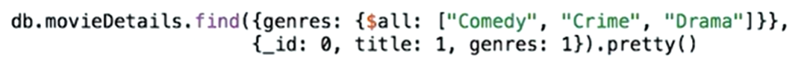
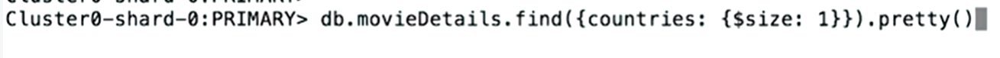

General Pointers
You have to ensure that you have access to port 27017 through your firewall. You can check by clicking HERE
MongoDB is a cross-platform document-oriented database program. Classified as a NoSQL database program, MongoDB uses JSON-like documents with optional schemas
The major difference between MongoDB and SQL Databases is the way they handle data. In SQL databases, data is stored in form of traditional 2 dimensional row-column structure while in MongoDB rich data document model is followed, which allows storage of any type of data.

A document is a record
A list of compass query operators
When first strating out ensure that shell and compass are displaying the same data buy doing a quick test.
In the shell you can use JavaScript. An example of this is were you can assign a variable like below and than call that variable.
martian = db.movieDetails.findOne({title: "The Martian"})
So now when we type in martian that query is ran
MongoDB Exam
- The Labs/Homework and Final Exam will go towards the final grade. A score of 65% and over will get you a certification of your achievement
Setup
Guide to setup Mongo DB on Mac
Tools Overview
- MongoDB Compass is the GUI for MongoDB. Compass allows you to analyze and understand the contents of your data without formal knowledge of MongoDB query syntax.

- MongoDB Atlas is the global cloud database service for modern applications. Deploy fully managed MongoDB across AWS, Azure, or GCP. Best-in-class automation and proven practices guarantee availability, scalability, and compliance with the most demanding data security and privacy standards.

- The mongo shell is an interactive JavaScript interface to MongoDB. You can use the mongo shell to query and update data as well as perform administrative operations.

Installation
Atlas
MongoDB Atlas is a fully-managed cloud database developed by the same people that build MongoDB. Atlas handles all the complexity of deploying, managing, and healing your deployments on the cloud service provider of your choice (AWS, Azure, and GCP).

- Atlas users can deploy clusters which are groups of servers that store your data. The servers are configured in a replica set. Each server in the cluster stores the same data

- Example of a data record being replicated to all servers in the cluster

- Replication ensures that your data is not lost if a server goes down of is attacked.
- The cluster of servers that hold the Mongo DBs are hosted in the cloud from companies like AWS and so on


- Tutorial for navigation of Mongo DB Atlas
Mongo DB Realm
MongoDB Realm is a serverless platform and mobile database. MongoDB Stitch and Realm Database are now part of MongoDB Realm.
Connecting to DB
You have a few options to connect to a Mongo DB a few are listed below
- Mongo DB Compass On this option ensure to add your public IP address to the DB in Atlas

For this connection you will need to get the the connection string and insert the password were specified.
- Mongo DB Shell is another way you can interact with the Mongo DB. The mongo shell is an interactive JavaScript interface to MongoDB. You can use the mongo shell to query and update data as well as perform administrative operations.
Mongo DB shell is downloaded as part of the Mongo DB installation and can be accessed through command propmt.
You are connected to a primary when making a shell connection. The primary is the only member in the replica set that receives write operations. MongoDB applies write operations on the primary and then records the operations on the primary’s oplog. Secondary members replicate this log and apply the operations to their data sets.
When connecting to an Atlas cluster using the shell, why do we provide the hostnames for all nodes when we launch mongo?
So that if the primary node goes down, the shell can connect to other nodes in the cluster instead.
Introduction
Understanding JSON
Please review the JSON spec for more detail on the data types directly supported in JSON.
- You will have to understand JSON when working with Mongo DB
- To learn more about JSON see here the JSON learning page
- An example of a JSON document is as below

- JSON is widely used as its easy for computers to parse and humans to understand
- JSON doucments are created of keys and values

- All keys must be surrounded in double quotes
- To separate a key and value is to use a :
- A field is a key and value pair and are sperated by using a comma
- Below are the supported value types in JSON

- White space outside quotes is not part of the JSON document.
- Arrays and Objects themselves can be values in JSON
- JSON documents support any level of hierarchy that is appropriate to your applications data model.
- To use the compass filter to display only documents you would like. This is done by using a JSON key and value.
- Date is not directly supported in JSON as a data type
Databases, Collections and Documents

- A database serves as a name space for a collection
- Collections store indivual records that are called documents.
- A document is a structure composed of file and value pairs, similar to JSON objects or other mapping data types. Fields in documents can hold rich data: other documents, arrays of values or documents. These properties make documents well suited to storing data from applications that use rich objects themselves for data storage. Consider the following document:

- A field is

Exploring Datasets in Compass

- Each Dataset will have one or more collections and when you click on the collection you will see multiple documents

- You will have the schema tab in compass which will give you each record used in each document and the format of that record.

MongoDB Documents: Scalar Value Types
Mongo DB Documents: Fields with Documents as values
- The nested of a document within a document is supported
The field air tempreture is the format document as it has two fields, one a string called quality and another which is value which is a number embedded. 
- You can have fields that are documents which have nested documents further down.

Mongo DB Documents: Fields with Arrays as Values
- Array values for fields are also supported
- Unlike relational database models, MongoDB documents can have fields which have values as arrays. The prototypical example in almost all MongoDB documentation is a document having a tags field, whose value is an array of strings, such as ["NoSQL", "Ruby", "MongoDB"]. If you’re coming from a relational world (which most of us are) then this feature, at first glance, is a bit intimidating.

- As mongo DB has a flexible data model all documents dont have to contain the same fields
MongoDB Documents: Geospatial Data
MongoDB Compass uses a 3rd party plugin for the geographical visualization of geospatial fields in your documents.
- Q - Which of the following are types of data Compass (and MongoDB) recognizes and specifically supports?
A - Documents, Arrays and Geospatial Data
Filtering Collections with Queries
An example of a filter in compass
- Mongo DB Compass provides a easy to use interface to run quries

- An example of a filter would be as below:
- The query is sent to the collection and the relevaqnt documents are presented.
- If you click on the graph element you will see extra functionality in compass. You will see the filter has been updated what the point of the graph you have clicked. You than press apply to the filter and the relevant documents will be displayed.

- You have different types of filters, a common being a equality filter. Presenting documents that are equal to the query specified
- The below example dispalys the graphs showing were each bar is equal to 5 years. So the query created is shows the birth years that are greater than 1985 and less than 1990.

- The gte and lt are called operators in Mongo DB.
- In compass you car actually click and hold multiple bars in a graph in the schema tan. This builds a custom query

- You will find some operators have a e at the end, this states equal to

The MongoDB Query Lanuage + Atlas
Introduction to CRUD
CRUD operations create, read, update, and delete documents.

- This is used to get Data in and Out of Mongo DB
- The Mongo Shell will be used in this chapter
Creating and Connecting a Sandbox in Mongo
- Connection String Example. /Sandbox is the name of the cluster and the username and password will have to be changed

- Create a new cluster - VIDEO Tutorial
Loading Data into Your Sandbox Cluster
- Start of by connecting the shell (Command Propmt) to the cluster
- the command show dbs returns a list of databases
- To quit the shell connection to your cluster use quit()
- To load data into a database you enter the directory of were the file is of the data in command propmt. Than run the connection script to connect to Mongo DB. Finally use load("FILENAME.INCEXTENTION") and this will import your data into the cluster.

- If you want to select the new database simply use use DATABASENAME. To get the name you can do show dbs and this shows all the databases
- If you want to see what is in the data base you can use show collections
- If you want to see documents in the collection you simply do db.COLLECTION.find().pretty()

Connecting to Your Sandbox Cluster from Compass
- Download Compass and than get your connection string to connect to your database

- You will be presented with the option to download compass which you can do from here. We already have it installed. You will have to edit the connection string in replace password with your password you setup.

- Next open up compass and connection using your newly modified string. Paste the string in first than click favorites, name the connection and pick a colour.

Creating Documents: insertOne()
- Create operation in Mongo DB are insert documents.
- To create a collection in compass you simply click on teh database and click create collection

- Once you have created the collection you can add documents by selecting the collection and clicking add. Than click insert document and than click the correct view.


- As you are inserting the data ensure to apply the corect value type to each record.

- You can edit a document by clicking the edit pen.
- You can do the above using Mongo DB shell. and the method we will be using will be .insertOne. To use this we have to first specifiy which database to use.
- To check what database you are currently using you can type db
- Ensure you are in the correct database before inserting
- ENSURE TO GET THE COLLECTION NAME RIGHT OTHERWISE A NEW COLLECTION WILL BE CREATED
An exmaple of using shell to insert one document would be db.MoviesScratch.insertOne({title: "Star Trek II: The Wrath Of Khan", year: 1982, imdb: "tt0084726"})
- You get back two bits of information one confirming it has been imported through and acknowledgement and second a ID has been created for the document.
- If the collection we specified was not already created the above insert would create both the collection and the document.
- If you dont provide a id one will be generated. An example of a id db.MoviesScratch.insertOne({_id: "tt0084726", title: "Star Trek II: The Wrath Of Khan", year: 1982, imdb: "tt0084726"})

Creating Documents: insertMany()
- Inserts multiple documents into a collection.
- To insert many we start with any array

- The insert many commad works very similiar to the insert 1.
- You can do a ordered insert or unordered insert. The default is a ordered insert unless you specify otherwise.


- When inserting many documents if two documents have the same ID than you will hit a error. At the point you hit that error no further documents below will be inserted.
- After the intial array you create to hold the multiple documents for can specify if you would like the import to be ordered or not.
- When setting the optional ordered value to false you will find the documents that are duplicates will error but the import will go through all the documents and not stop

Reading Documents: Scalar Fields - Nested Field Search
- A scalar field is a field whose value is neither a document nor an array; e.g. a field whose value is a string or an integer is a scalar field. A scalar field can be a field nested in a document, as long as the field itself is not an array or a document.
- You can make the filter in compass as complicated as you would like

- To perform the same filtered search in shell it is called find. You start by ensuring you are using the correct database and this can be checked by using db
- The command will go something like db.movies.find({mpaaRating: "PG-13"}).pretty(). The .pretty displays the returned infomation in a more readable manner
- A example of a more complex filter through shell would be db.movies.find({mpaaRating: "PG-13", year: 2009}).pretty()
- To perform a embedded filter search which is were the search looks are values that are within a vlaue like a object, you will state the field that is the object and than a dot and than the embedded field. Example {wind.type: "C"}

- You can drill down further into more nested fields

- When doing the same search in shell you have to wrap the key in "", as it is looking at a sub category.
- Again in the shell ensure you are using the correct database.
- The command in shell db.data.find({"wind.direction.angel": 290}).pretty()
- Below is an exmaple of using a count method for searching in the shell. This uses the query applied and comes back with a number of how many.

Reading Documents: Array Fields - Search
- When searching for data that are held in an array you can look for exactly the array.
- You can also look for information thats is placed exactly in the location of the array. Below example displays a search in an array for a actor that is the main actor for the movie. The database holds this information as the main actor is the first actor in the array

- The above completed in the shell is as below


Cursors
- More on the Cursor in MongoDB Shell
- More on the getMore
- Find returns a cursor and a cursor is essentially a pointer to the current location in a result set.
- When running a query we recieve the documents in batches and the cursor itterates through the batch. The normal batch will load 20 and we can ask for more documents to itterate through.
- If there are more records to see you will be shown this at the bottom

Projections
- MongoDB - Projection. In MongoDB, projection means selecting only the necessary data rather than selecting whole of the data of a document. If a document has 5 fields and you need to show only 3, then select only 3 fields from them.
- A projection is added to a find method to limit the resource used and for the query to not return all records for every document.
- The below example states - return all that meets the query but only display the title for each document.

- A projection is the second argument in your query. You will always have the ID returned with each document unless specified
- To include a field we use a 1 in the argument and if we want to exlucde a field we use a 0.
Example to show title and no id - {title: 1, _id: 0}. This is added at the end of the find query
Updating Documents: updateOne()
- We use the method updateone to update one document in a database
- In Compass it is easy to add the field as you just edit the document

- Below is some syntax to when updating a document with a new field/record. First specify a filter which will find the document or documents we want to uodate. Update One will only update the first document it finds. The best filter would be to use the ID to ensure the correct document is updated.

- After finding the document you need you have to use a Update Operator, above we have used set to set a value for a field in the document.
- If what you are updating doesnt already exist than that field will be created
- The acknowledgement of updating a document

- Another Example

Update Operators
- First specify a filter which will find the document or documents we want to uodate. Update One will only update the first document it finds. The best filter would be to use the ID to ensure the correct document is updated. See previous section
- The update operators web page can be used as a ref

- You have the set operator which replaces the value stored. This is not always the best solution as you have the inc operator which increments the value of the field saving you from getting any calculations wrong.

- The below example hold the review in a variable. Than performs a update to the movieDetials collection pushing onto the current array which the detials under review.

- The operator push not only pushes onto an exisitng array but if the array does not exisit it will add the array
- The $each modifier is available for use with the $addToSet operator and the $push operator. If we dont use the each operator all the reviews would be added as a single element.

Updating Documents: updateMany()
- All the same principles apply to from the last section.
- Updates all documents that match the specified filter for a collection. This is rather than the previous which just updates the one document
- More on update many()

Upserts
- The below is an example were we use a upsert to either create a field or leave the field as it is. By upsert being equal to true if the document existed it would be replaced with exactly the same detials. If it didnt exist updateOne performed a upsert. By using updateOne and upsert we dont have to query to see if the document exists and than query again to upsert both actions are done at once. Here they are three paramters against updateOne
Basically update documents and if there isnt one upsert will add one. 
replaceOne()
- replaceOne Replaces a single document within the collection based on the filter.
- The below example shows the natural behaviour of a application. Line 13 is the search syntax using let variables set above.

Deleting Documents
- You have the two options to delete a document db.collection.deleteMany() and db.collection.deleteOne()
- Here we deleted one single record that was identified through the ID which is unique to that record.

- Here we deleted many records that was identified through the ReviewerID which is unique to those records.

Deeper Dive into MongoDB Query Lanuage
Mongos info for all Query and Projection Operators

Comparison Operators
- A list of Qury and Projection Operators can be found on the mongo website
- You will find a e at the end of some of the operators, this adds equal to the operator
- An example we need to find all movies that have a runtime greater than 90
db.movieDetails.find({runtime: {$gt: 90}}) - The above returns a lot of information for each document that meets that meets the search. We can just return the title in this instance.
db.movieDetails.find({runtime: {$gt: 90}}, {_id: 0, title: 1, runtime: 1})
In the above we are saying on return documents that have a runtime greater than 90. Than we are saying dont show the _id but show the title and runtime fields. - The below example is for movies that have the runtime greater than 90 mins and less than 120 mins
db.movieDetails.find({runtime: {$gt: 90, $lt: 120}}, {_id: 0, title: 1, runtime: 1}) - The below example now inccludes the equal to also
db.movieDetails.find({runtime: {$gte: 90, $lte: 120}}, {_id: 0, title: 1, runtime: 1}) - The below example is similiar to the above but looks at a embedded document. The document being tomato and a embedded field being meter.
db.movieDetails.find({runtime: {$gte: 180}, "tomato.meter": {$gte: 95}}, {_id: 0, title: 1, runtime: 1})

- Another example but this time using the $ne operator, selects the documents where the value of the field is not equal to the specified value. This includes documents that do not contain the field. Documents that dont have a rated field at all will also be returned.
db.movieDetails.find({rated: {$ne: "UNRATED"}}, {_id: 0, title: 1, rated:1}) - The $in operator selects the documents where the value of a field equals any value in the specified array. The values for this operator must be in an array.
An exmaple of this is db.movieDetails.find({rated: {$in: ["G", "PG"]}}, {_id: 0, title: 1, rated:1})
Element Operators
- There are two element operators
$exists
$type - You can populate keys that have no vlaue with null. This way when you search using a $exists for null in a field it will display both anything with null or any document that doesnt have the field included.
- $type selects documents where the value of the field is an instance of the specified BSON type(s). Querying by data type is useful when dealing with highly unstructured data where data types are not predictable.
- An example of a type operator is the below, were we ask to see all viewerRating that have a interger. The viewerRating has different data types inserted.

- Here are a list of all the available types you can filter on for the $type operator.
Logical Operators
- There are four types of logical operators

- Below is an example of the or operator were we look at the ratings of a movie from the public and critics. In this example we only return the two fields required and the title of the movie to make it easy to digest the information.
The $or operator take in selectors as an array. The elements of the array are query selectors, anyone of which can be true.
- The $and ensures that both selectors chose in the array have to be true.

If you use a simple find you can bound multiple quries into one string by using the comma. We use the $and for times when we have to specify the same field more than once.
- If we can the above exmaple without an $and the last instanc eof the key would be used and not the first
Array Operator: $all
- The $all operator selects the documents where the value of a field is an array that contains all the specified elements.
- 
- Everything in the array has to be in the array field in the document.
- They dont have to be in the order you specify in your search.
- Take note we specify the field we are looking at first
- For $all you will also find other values in the array for a record
- Example


Array Operators: $size
- The $size operator matches any array with the number of elements specified by the argument.
- The below example we look at the size of the array for the countries field which specifies how many countries were filmed in for that movie
 - If we want a count of the results we can also use this db.movieDetails.find({countries: {$size: 1}}).count()
Array Operators: $elemMatch
- The $elemMatch operator matches documents that contain an array field with at least one element that matches all the specified query criteria.
- The example when we need to use $elemMatch would be when we need to find a number/value which is embeded in an array.
- Below we are looking to see if the country Germany in the boxoffice field has a revenue greater than 17

- It actually doesnt but soemthing will still be returned as other countries have values greater than 17

- The below is the correct way to search for a single value in an embedded array. Specify the field you want to filter on, $elemMatch expects a document as its value and in that document you specify selecters that will be used for the query.

- Example